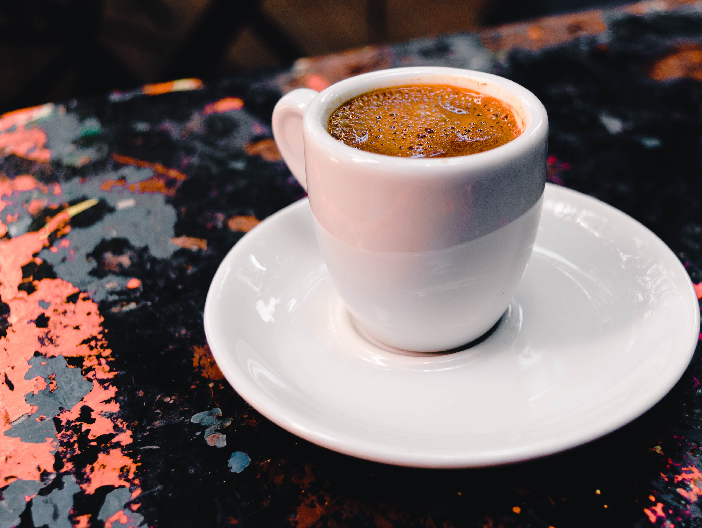
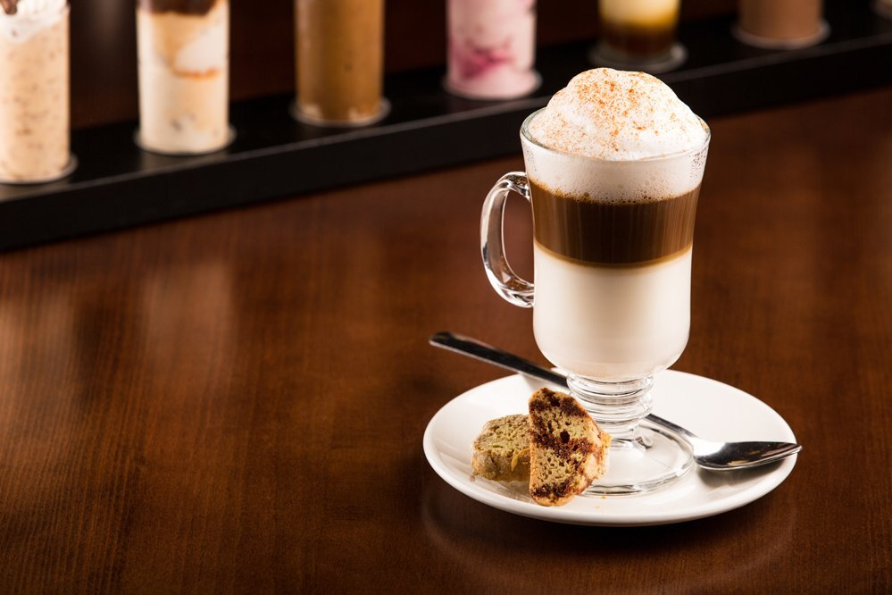
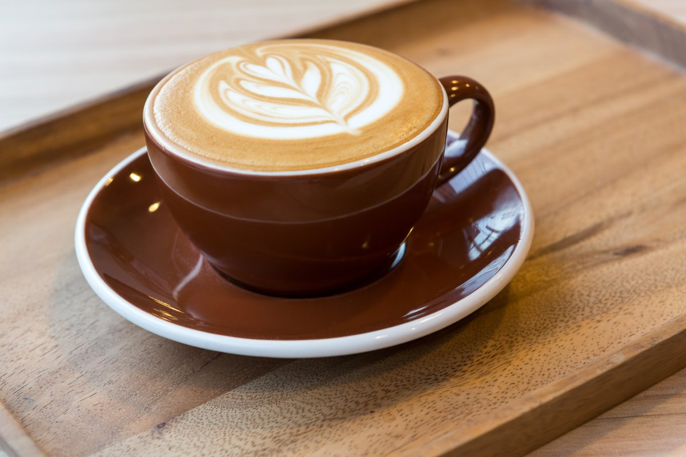
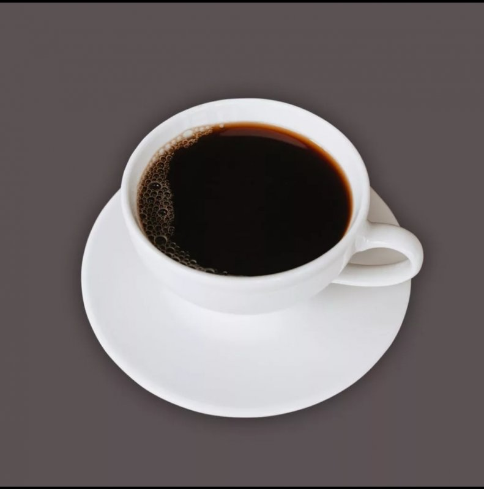

Крепкий и ароматный кофе, приготовленный путем прокачивания горячей воды через молотые кофейные зерна.
Нежный кофе с молоком, обычно подается в стеклянной чашке с тонким слоем молочной пенки на верху.
Кофе с равными долями эспрессо, молока и молочной пенки, обычно украшенный какао или корицей.
Слабый кофе, приготовленный добавлением горячей воды к эспрессо, что делает его похожим на обычный кофе.
